Data Visualization: R Graphics
Introduction
One of the best features of R is its graphics capability. As far as
flexibility and breadth, R graphics is unsurpassed (in my opinion).
There are MANY functions in R that involve visualizing data. There are
many examples online, but a nice site that has tons of graphics (and
syntax!) is: http://www.r-graph-gallery.com/.
The plot() Function
A very useful graphics function is the plot() function.
This function plots a two-dimensional pane with two arguments giving the
x and y coordinates.
Let’s create a simple plot:
x <- rnorm( 100, 0, 1 ) #create a vector with 100 elements drawn from a normal distribution.
y <- seq( 1, 10, length.out=length( x ) ) # create a vector 1:10 with same length.
plot( x, y ) #plot it.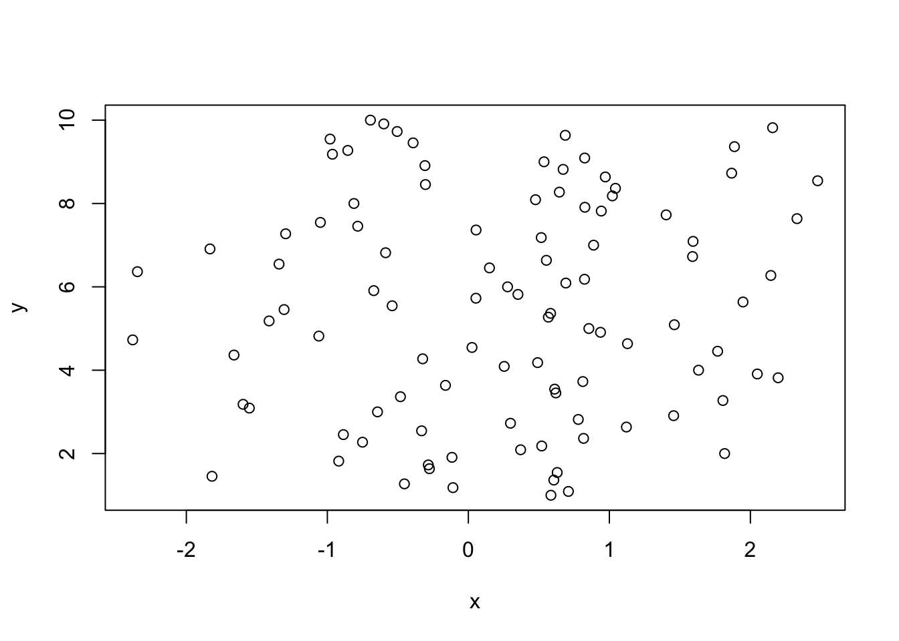
This is a pretty simple plot. As mentioned, one of the nice features
of R is the flexibility to create your plot. Take a look at the
different arguments that we pass to plot() to modify it by
examining the help: ?plot.
Overall, there are many different parameters we can modify
in plot(). Let’s check out a few:
Type of plot
We can change the “type” of plot:
plot( x, y, type="l" ) #plot a line.
plot( x, y, type="p" ) #plot points.
plot( x, y, type="b" ) #plot both!Often, when plotting multiple objects, we want to first set up the
plot regions before adding anything. This is a plot of type “none”:
plot( x,y, type="n" ).
plot( x, y,
type="n",
main="our sample plot", # plot a title.
xlab="this is the x axis", # change the x label.
ylab="this is the y axis" # change the y label.
)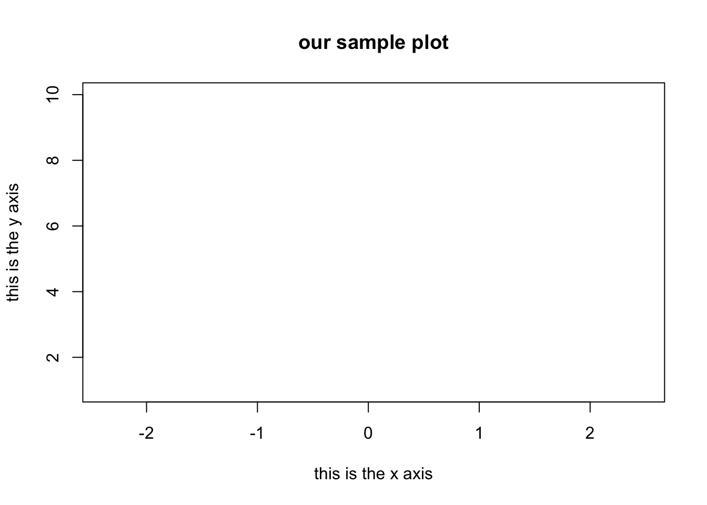
Characters
We can also change the “characters” of the plot:
plot( x, y, pch=1 ) #plot a point.
plot( x, y, pch=2 ) #plot a triangle.
plot( x, y, pch=3 ) #plot a +.
plot( x, y, pch=4 ) #plot an x.The argument pch determines the shape of the plot points. The numeric values 0 to 25 represent different default shapes. We can also use any number, letter, or symbol as a plotting shape.
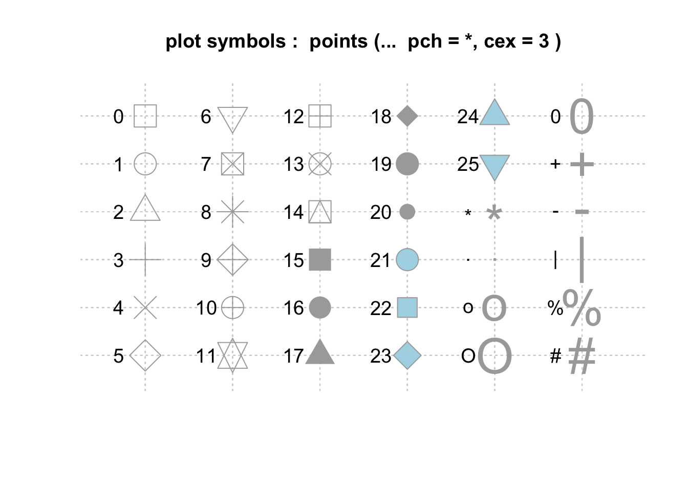
Note that shapes 0 to 14 are hollow, 15 to 20 are solid, and 21 to 25 can also plot a background color specified by the bg= argument.
Points, lines, text, etc.
Additionally, the points(), lines(),
segments(), and text() functions are useful
for adding information to plots.
Here is an example I use in my data analysis course to illustrate the properties of the standard normal distribution.
First, let’s set up our values:
y <- seq( -15, 30, length=1000 ) # sequence from -15 to 30.
hx.1 <- dnorm( y, 0, 1 ) # densities for the plots.
hx.2 <- dnorm( y, 0, 2 )
hx.3 <- dnorm( y, 0, 3 )Next, let’s set up the plot, but we don’t want to add anything yet
(so we use type="n"):
plot( y, hx.1,
xlab="", ylab="", # blank out the labels for x and y.
type="n", #do not plot anything.
main="Normal Distributions" # a title.
)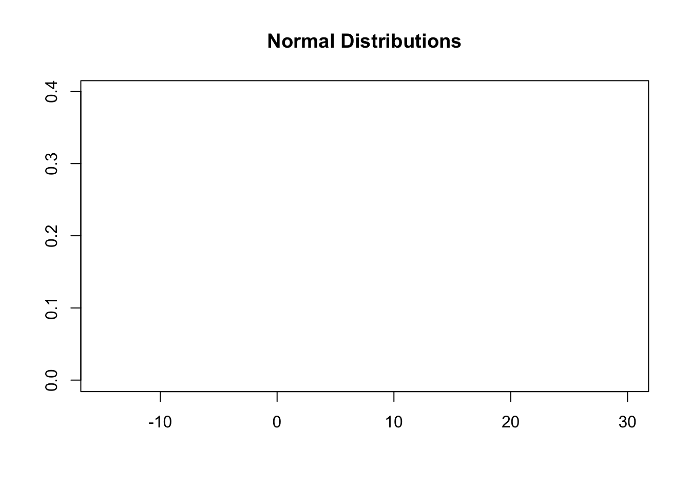
Now, illustrate the shape of the distributions using the
lines() function (you can copy and paste one at a time to
see them get added):
plot( y, hx.1,
xlab="", ylab="", # blank out the labels for x and y.
type="n", #do not plot anything.
main="Normal Distributions" # a title.
)
lines( y, hx.1, col="blue", type="l", lwd=2 )
lines( y, hx.2, col="red", type="l", lwd=2 )
lines( y, hx.3, col="darkgreen", type="l", lwd=2 )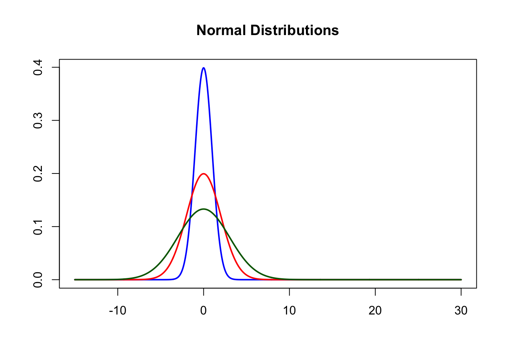
Now, add a line to show the central tendency by using the
segments() function:
plot( y, hx.1,
xlab="", ylab="", # blank out the labels for x and y.
type="n", #do not plot anything.
main="Normal Distributions" # a title.
)
lines( y, hx.1, col="blue", type="l", lwd=2 )
lines( y, hx.2, col="red", type="l", lwd=2 )
lines( y, hx.3, col="darkgreen", type="l", lwd=2 )
segments( 0, 0, 0, 0.5, col="black", lwd=2 )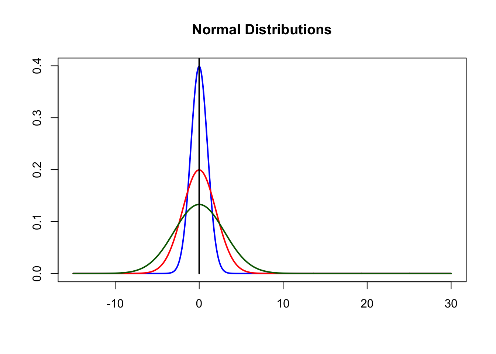
Finally, add some text to show the values (note that we will use the
text() function):
plot( y, hx.1,
xlab="", ylab="", # blank out the labels for x and y.
type="n", #do not plot anything.
main="Normal Distributions" # a title.
)
lines( y, hx.1, col="blue", type="l", lwd=2 )
lines( y, hx.2, col="red", type="l", lwd=2 )
lines( y, hx.3, col="darkgreen", type="l", lwd=2 )
segments( 0, 0, 0, 0.5, col="black", lwd=2 )
text( 11, 0.35, "Mean = 0, SD = 1", col="blue", cex=1.5 )
text( 12, 0.15, "Mean = 0, SD = 2", col="red", cex=1.5 )
text( 13, 0.06, "Mean = 0, SD = 3", col="darkgreen", cex=1.5 )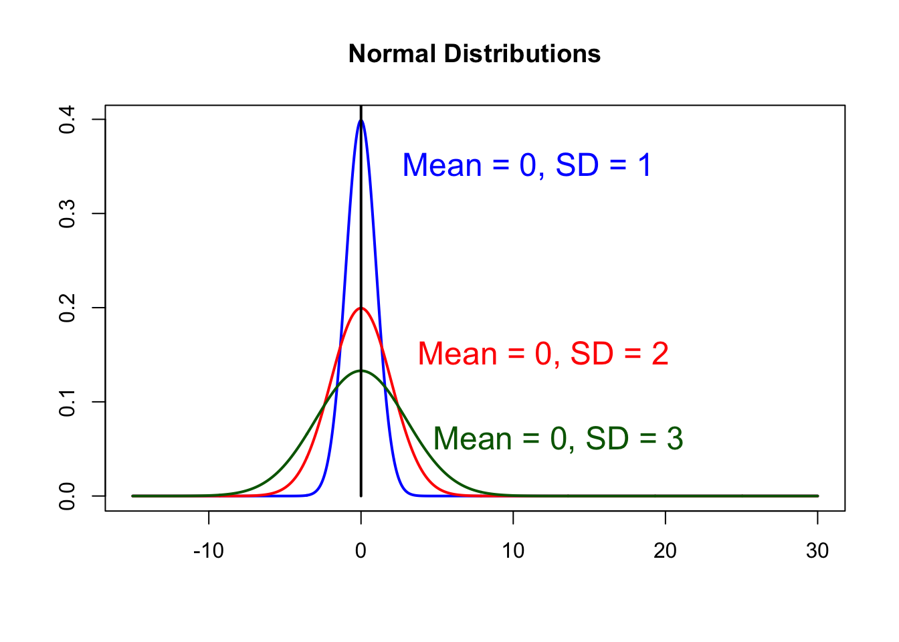
The Layering Approach
As we have seen, we can start with a basic plot and add information. Creating graphics in this way is referred to as layering because we are stacking additional layers of elements on top of each other.
Consider the following plot:

As you can see, there are a number of elements that have been used to create this plot:
- a basic plot layout using
plot() - a set of points using
points() - several segment lines using
segments() - a title and axis labels using the
main=,xlab=, andylab=arguments in the functionplot() - and some words using
text().
Let’s go through and build this plot, layer by layer.
First, what are these data?
The data are yearly rates of family deaths recorded by a professor at Penn State. That is, the rate at which family deaths are reported to him prior to an exam from 1960-1995. Here are what the data look like in a table:
| Year | Death Rate |
|---|---|
| 1960 | 0.18 |
| 1965 | 0.20 |
| 1970 | 0.24 |
| 1975 | 0.30 |
| 1980 | 0.47 |
| 1985 | 0.61 |
| 1990 | 0.70 |
| 1995 | 0.90 |
Now, let’s move the data into objects to work with in R:
x <- c( 1960, 1965, 1970, 1975, 1980, 1985, 1990, 1995 )
y <- c( 0.18, 0.20, 0.24, 0.30, 0.47, 0.61, 0.70, 0.90 )Next, let’s set up the plot and define the limits of the axes using
xlim= and ylim=, define the title using
main=, and set the axis labels using xlab= and
ylab=:
# Set up the plot.
plot(x, y,
xlim=c( min( x ) - 5, max( x ) + 5 ), # set x axis limits.
ylim=c( min( y ) - 0.5, max( y ) + 0.5) , # same for y axis.
main="Plot of Average Family Deaths by Year", # title.
xlab="Year", # x axis label.
ylab="Average Family Deaths", # same for y axis.
type="n" # don't plot anything inside.
)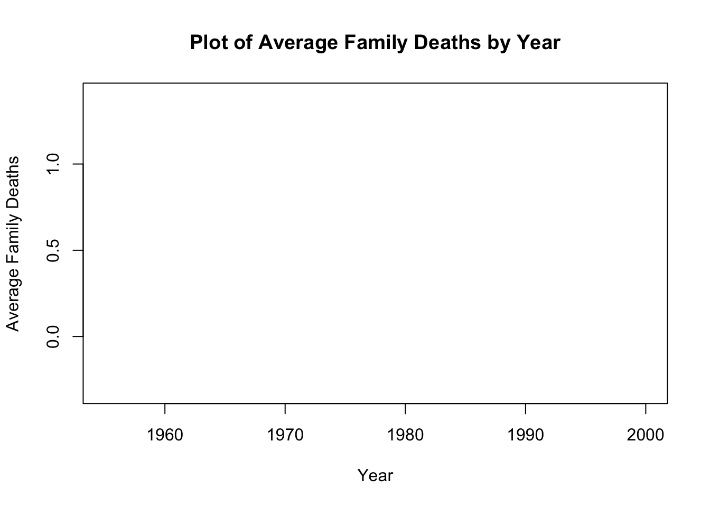
Now, we can add the points to the plot using the
points() function. We can customize the points using the
pch=, col=, and bg=
arguments.
plot(x, y,
xlim=c( min( x ) - 5, max( x ) + 5 ), # set x axis limits.
ylim=c( min( y ) - 0.5, max( y ) + 0.5) , # same for y axis.
main="Plot of Average Family Deaths by Year", # title.
xlab="Year", # x axis label.
ylab="Average Family Deaths", # same for y axis.
type="n" # don't plot anything inside.
)
points( x, y, pch = 21, col = "red", bg = "lightblue" )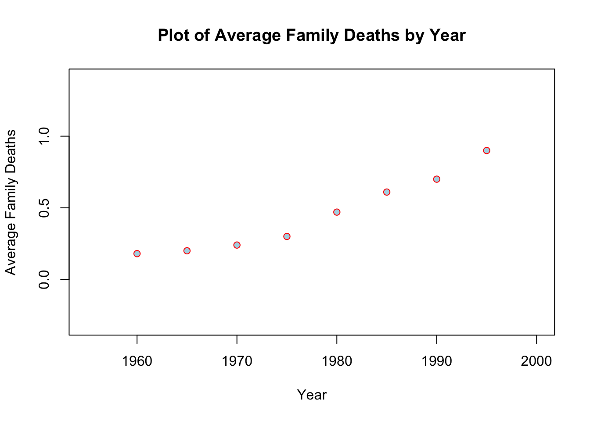
What additional information could we add to this plot that would aid in our understanding of the relationship between year and average family deaths? What about understanding how regression works?
Well, we could add the least-squares regression line to the plot
using the abline() function and the lm()
function:
plot(x, y,
xlim=c( min( x ) - 5, max( x ) + 5 ), # set x axis limits.
ylim=c( min( y ) - 0.5, max( y ) + 0.5) , # same for y axis.
main="Plot of Average Family Deaths by Year", # title.
xlab="Year", # x axis label.
ylab="Average Family Deaths", # same for y axis.
type="n" # don't plot anything inside.
)
points( x, y, pch = 21, col = "red", bg = "lightblue" )
abline( lm( y ~ x ), lty=2 )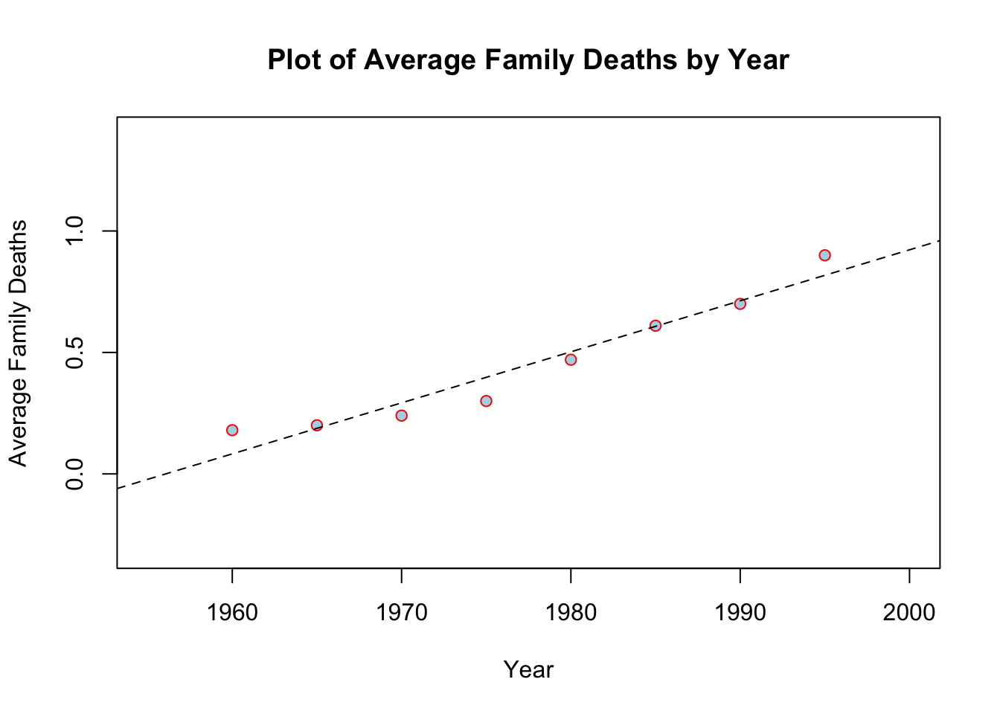
Additionally, we can illustrate how OLS estimation works. Recall that
OLS finds the line that minimizes the sum of squared residuals. We can
show that using the points(), abline(),
segments(), and text() functions:
plot(x, y,
xlim=c( min( x ) - 5, max( x ) + 5 ), # set x axis limits.
ylim=c( min( y ) - 0.5, max( y ) + 0.5) , # same for y axis.
main="Plot of Average Family Deaths by Year", # title.
xlab="Year", # x axis label.
ylab="Average Family Deaths", # same for y axis.
type="n" # don't plot anything inside.
)
points( x, y, pch = 21, col = "red", bg = "lightblue" )
abline( lm( y ~ x ), lty=2 )
# add some points to the plot.
points( mean( x ), mean( y ), col="black", pch=3, cex=3 )
# plot the mean of y horizontally.
abline( h=mean( y ), lty=3 )
#plot the mean of x vertically.
abline( v=mean( x ), lty=3 )
# add segments and text showing the deviations.
segments( 1985, mean( y ), 1985, 0.61, lwd=3, col="red" )
text( 1987.2, 0.53, "y-ybar" )
segments( mean( x ), 0.61, 1985, 0.61, lwd=3, col="red" )
text( 1981, 0.65, "x-xbar" )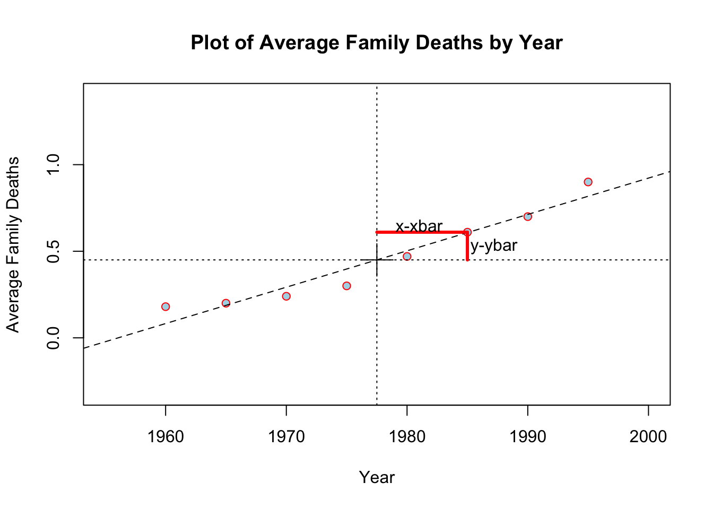
Plotting Model Results with Confidence Intervals
One of my biggest peeves about conference presentations (and some manuscripts [and especially job talks]) is bombarding an audience with tables full of numbers and asterisks. A simple (preferred?) approach is to plot point and interval estimates for model results.
If you prefer a “do-it yourself” approach, this is easy to do in R
with the plot() function. For example, suppose we have
estimated a model for the regression of delinquency on age, male, SES,
delinquent peers, and school attachment. The OLS coefficients (standard
errors) are:
| Variable | Estimate (Standard Error) |
|---|---|
| Age | 3.50 (1.10) |
| Male | 0.80 (0.22) |
| SES | 1.20 (0.81) |
| Del. Prs. | 0.70 (0.33) |
| Schl. Attch. | -0.60 (0.11) |
We could just enter the point estimates and standard errors as objects:
The upper and lower 95% confidence intervals are the point estimate +/- 1.96:
Now, we can plot the point estimates using points() and
the intervals using segments(). For example:
n.coef = 5 # number of coefficients.
names = c( "age", "male", "SES", "Del Peers", "Sch Attach" ) #coef names.
x.ax = seq( 1, n.coef, length.out=n.coef ) #dims of the x axis.
y.ax = seq( min( lower.ci ), max( upper.ci ), length.out=n.coef ) #y axis.
plot( x.ax,
y.ax,
type="n", #do not plot anything yet.
ylab="coefficient w/ 95% CI", #label for y axis.
xlab="", #label for x axis .
xaxt="n" #toggle x axis labels (for now).
)
points( x.ax,point ) # plot the point estimates.
segments( x.ax, upper.ci, x.ax, lower.ci ) #now the intervals.
abline( h=0, lty=2 ) # add a line at zero.
axis( side=1, at=x.ax, labels=names ) # add coefficient labels.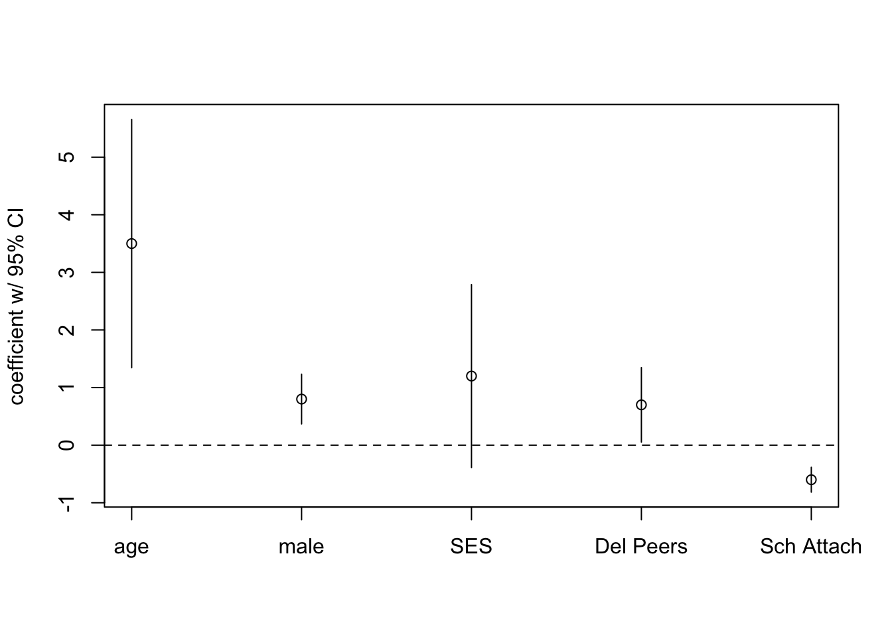
What does the plot tell us? This is beneficial for interpretation and only with 5 coefficients in the model. As the table gets bigger, the visualization of what the model is showing becomes more useful.
You could add more finesse to what we have already done, or
you could employ the texreg package that plots model
coefficients. Let’s check it out:
install.packages( "texreg" ) #install the package.
library( texreg ) #call the library to load the package functions.
help( package="texreg" ) #check out what the package can do.Working with Multiple Frames
When a graphic function is called, such as plot(), a new
window opens up. The default is to have one plot per window. This
window, however, can be “partitioned” into multiple panes to include
multiple plots with the par(mfrow=c(,)) function. Within
the mfrow=c(,) portion we choose how many rows and columns
of pictures you want in the pane. Here are some examples:
par( mfrow=c( 1,1 ) ) # the default.
par( mfrow=c( 2,2 ) ) # 2 rows, 2 columns, so 4 pictures.
par( mfrow=c( 2,1 ) ) # 2 rows, 1 column, so 2 pictures, top/bottom.
par( mfrow=c( 1,2 ) ) # 1 row, 2 columns, so 2 pictures, left/right.Let’s plot our two histograms together and then individual for each one.
men <- rnorm( 40, 175, 10 )
women <- rnorm( 40, 145, 12 )
data <- c( men, women )
par( mfrow=c( 2, 2 ) )
hist( men, col=2, xlim=c( min( data )-5, max( data )+5 ), xlab="Weight",
main="Histograms for Men and Women" )
hist( women, col=3, add=TRUE )
hist( men, col=2, xlab="Weight", main="Histogram for Men" )
hist( women, col=2, xlab="Weight", main="Histogram for Women" )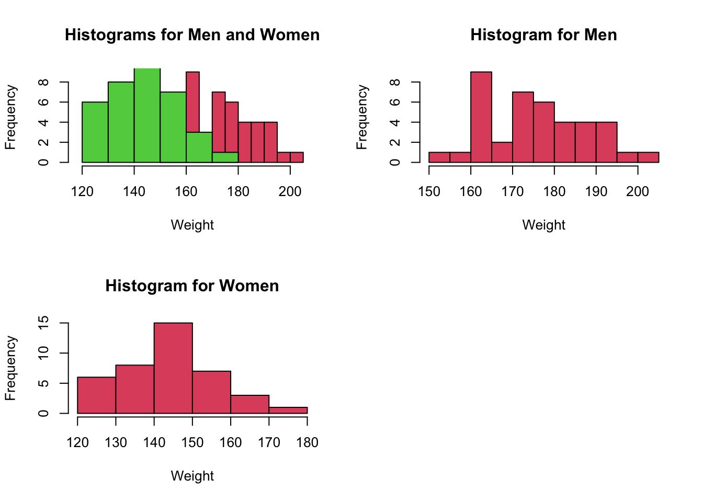
Exporting Graphics
R allows you to export your graphic to a .pdf file. This is nice if you write a script for many plots and what a single .pdf file that has all the plots.
The structure of the function is:
pdf( "name.pdf" ) #where you name the file and add the file path if necessary.
plot() #the syntax to make the plots.
dev.off() #turn off the plotting device.For example, let’s make a few plots and then export them to a .pdf file.
This is just the beginning!!!
There is MUCH more you can do with just the plot()
function. See help( par ) for a list of all the arguments
and options for plotting.
There are also many other options for plots in R. There are entire
packages created for plotting. One in particular is the
ggplot2. Check out these
visualizations for examples of working with ggplot2.
Questions?